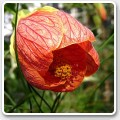
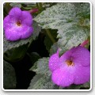
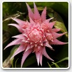

Plante de apartament

Este un fapt bine ştiut, că şi cea mai banală plantă poate transforma apartamentul într-un cămin primitor şi cald. Un colţ, o floare, o prezenţă verde te face să te cuprindă senzaţia de plăcut când intri pe uşă. Dacă tot fac parte din viaţa noastră de zi cu zi, de ce să nu învăţăm cum să le îngrijim? Cele mai simple trucuri le vor transforma în frumuseţile şi mândriile apatamentului nostru.

Abutilon
Pristolnic Originari din zonele tropicale şi subtropicale ale Americii Meridionale, pristolnicii sunt arbuşti viguroşi care cuprind peste 100 de specii; dacă se cultivă în ghiveci, cresc până la 1,5 m înălţime. Prezintă multe ramuri subţiri şi frunze cu margini crestate adânc, asemănătoare cu cele ale paltinului.Acalypha
Acalifa Originara din regiunile tropicale ale Asiei de Sud-Est până în insulele Pacificului, Acalypha sunt arbuşti viu coloraţi, cu creştere rapidă. Consecutiv perioadei de creştere (de la începutul primăverii până la sfârşitul verii) devin plante care se dezvoltă uneori sub formă de tufişuri; unele specii, cum ar fi Acalypha hispida se cultivă pentru florile lor reunite în inflorescenţe spectaculoase, lungi şi suspendate;

Achimenes
Este vorba de plante mici, care cresc sub formă de tufă; prezintă frunzuliţe lucioase, iar în timpul verii se acoperă de flori tubulare, viu colorate. Majoritatea Achimenes sunt originare din America Centrală. La axila frunzelor situate superior apar florile care pot fi solitare sau aranjate în grupuri mici, având culori variate: albe, galbene, roz, roşii, albastre şi purpurii.Adiantum
Părul Maicii Domnului Datorită aspectului său extrem de graţioşi, Părul - Maicii - Domnului este una dintre plantele de apartament cele mai cunoscute; fiind totuşi o plantă foarte delicată necesită, pentru a obţine rezultate bune, o îngrijire care, deşi este simplă, are reguli exigente şi precise. Este o ferigă care prezintă un frunziş delicat, constituit din multe frunzuliţe triunghiulare reunite pe rămurele mlădioase.

Pagina urmatoare >>
Aechmea
Ecmea Majoritatea speciilor din genul Aechmea sunt originare din America Meridională şi sunt epifite, trăind pe arborii din pădurile pluviale. Particularitatea acestor plante este aceea că înfloresc doar o singură dată şi apoi mor, însă între timp produc mlădiţe în partea bazală din care este posibil să se obţină plante.Pagina urmatoare >>
Cautare: